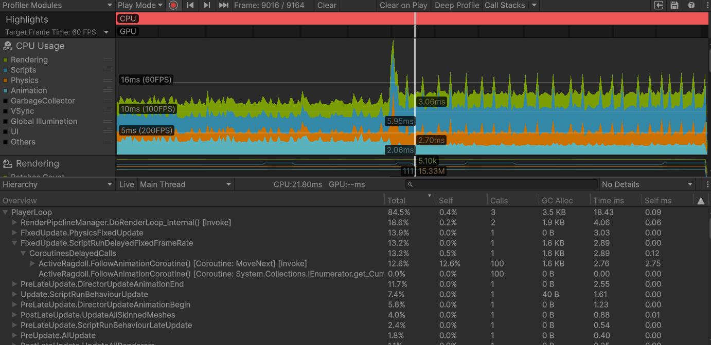

XR-labs is a partnership between the Belgian Federal Police, Military, and Customs Department focusing on XR. It's main focus is creating a VR training simulator for the special forces and police. I was able to complete my end-of-studies internship here.
My main project during this period was making a TECC (Tactical Emergency Casualty Care) system to be added into the training simulation. It was not completly finished in the half a year timespan, but I did create quite a most aspects of the target system. The first and hardest part I had to create was a system for animations to partially disable. For example when the target is shot in the arm, they should not be able to use it anymore, or atleast less. I did this by creating an active ragdoll system onto the existing skeletons that can be switched to when the target is shot or pushed. (See the 2 skeletons in the clips) The next step was creating a system for wounds. These wounds are different depending on the location of the wounds. The characters also react differently to each wound by for example fainting or dropping their weapon. There's also some randomness involved to best emulate real life scenarios.
The final part was the TECC system itself. At the point I left it, it was simply when you touched the character where treatment was needed, it automatically completed the treatment. In case of limb wounds this meant placing a tournique higher up the limb. Treating the wound would stop the characters from bleeding out and they all have a simple visual representation of the treatment being completed. Expansion on this was planned using buttons that the operators would place on the location where they usually carry the specific treatments. Finally, the last thing I'd have to do is add networking to implement the system into the actual project, but since the existing networking system was being revised and my time at XR-Labs was almost up, we decided to not implement that yet. Instead I added a pushing system that works for both physics simulated and on kinematic pushers, the characters will fall if they're pushed too hard. I had to create a system to manually interpolate the bones to the most fitting stand up animation to make this work. This proved more difficult than expected as physics had already been activated on the bones by this point.
One of the most important parts during the creation of the active ragdoll system, was making sure that it didn't slow down the entire project. After my first iteration of the complete system, simulating 100 active ragdolls took 40-50ms, reducing the framerate significantly. Thus I had to find ways to optimize the system. I'll cut a long story short, I reduced the amount of lookup calls as much as possible, this combined with making more lists and arrays to store data without getting them every frame sped up the system by 50% already, but that was not enough. Secondly I decided to change as much of my stored vectors/lists/arrays into dictionaries to use their O(1) lookup speed. With a couple more lookup optimizations added onto that I had reduced the frame time of 100 simulated characters to 5.3ms. This was already 90% faster than the original version, but it still created a 15-20fps reduction when all 100 characters were simulated, meaning I was still unsatisfied, so I decided to go deep profiling. The conclusion I came to was that the string lookup in the dictionaries took half of all the frame time (of my system), changing the dictionaries to no longer use strings as keys. Lastly I made it so the active ragdoll system didn't activate untill the character was actually shot. This meant I needed to a second animation on top of the simulated one, but this was still faster than the active ragdoll system being active all the time. The eventual results are what you see in the attached image, with the frame time increase happening when I activate the active ragdoll on 100 characters at once, resulting in only a 2ms increase instead of 50ms.
